|
|
| 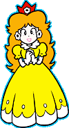 | 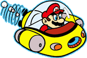 | 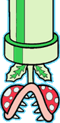 |
| デイジ−姫 | マリンポップ号（潜水艦） | 逆さパックン／400PTS |
| ▲ちょっとおてんばで、元気いっぱいのお姫様。 | ▲水中を、マリオを乗せて自在に走る、魚雷装備のサブマリン。 | ▲上から出て来るパックンフラワ−。頭に噛み付かれないように注意しよう。 |
| 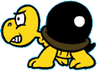 | 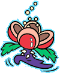 | 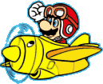 |
| ノコボン／100PTS | ポンポンフラワ−／800PTS | スカイポップ号（飛行機） |
| ▲背中に爆弾を背負っているカメ。ふんだあと爆発するのでうまくよけよう。 | ▲歩行しながら、ポンポン毒花粉を飛ばす。 | ▲大空では向かう所敵なし。マリオの自慢の飛行機 |
| 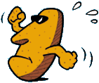 | 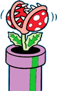 | 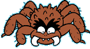 |
| トコトコ／400PTS | パックンフラワ−／400PTS | ブラックピョン／400PTS |
| ▲元気に手をふりながら走ってくる石像。 | ▲上から出て来るパックンフラワ−。頭に噛み付かれないように注意しよう。 | ▲ピョンピョンはねながら、襲ってくるクモのような生き物。 |
| 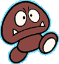 | 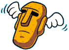 | 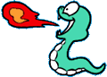 |
| チビボー／100PTS | パタドン／800PTS | ニョロリン／800PTS |
| ▲地面をちょこちょこ歩く、気の弱いキノコ。 | ▲羽のはえた石像飛びながら、マリオを押しつぶそうとする。 | ▲臆病で動こうとしないが、マリオを見つけると、毒玉を吹いてくる。 |


|